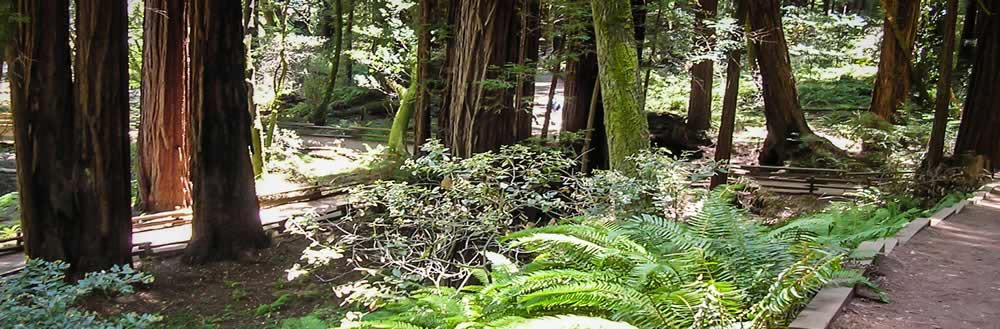

Activities at Pacific Trails
- Hiking
- Pacific Trails Resort has 5 miles of hiking trails and is adjacent to a state park. Go it alone or join one of our guided hikes.
- Kayakin
- Ocean kayaks are available for guest use.
- Bird Watching
- While anytime is a good time for bird watching at Pacific Trails, we offer guided birdwatching trips at sunrise several times a week.”